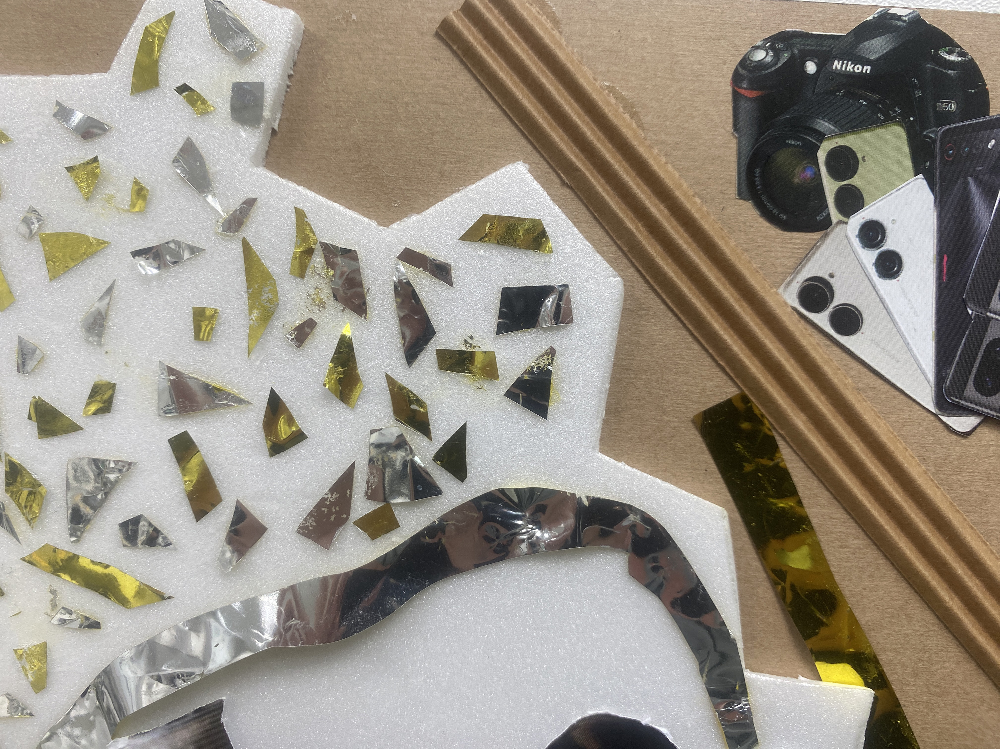
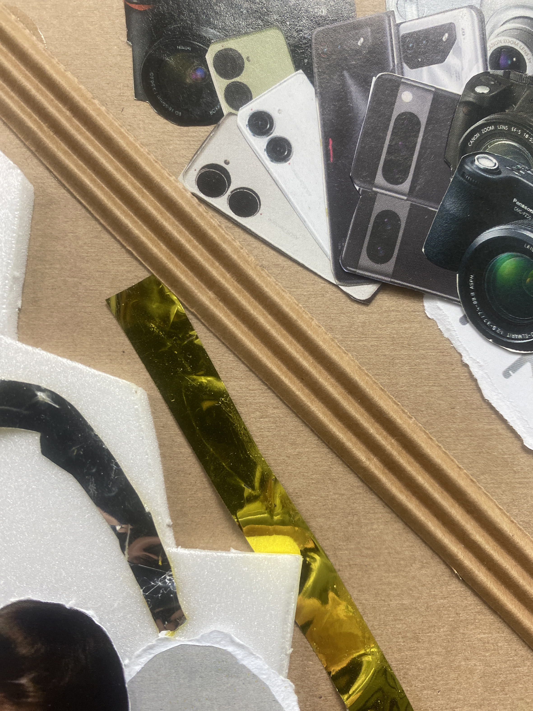
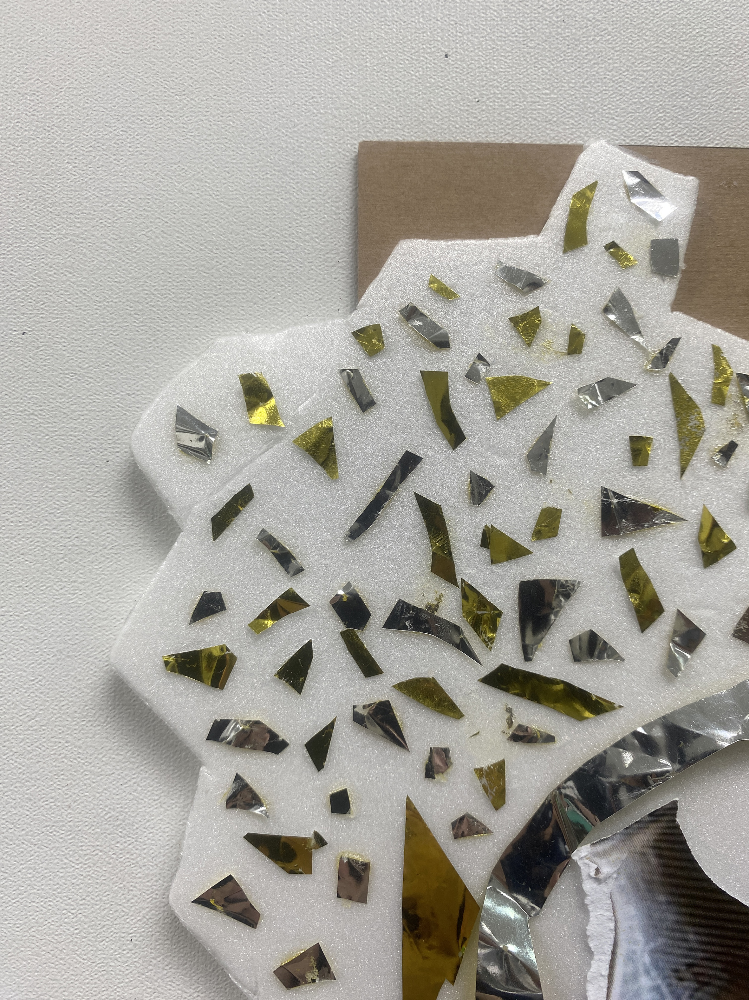
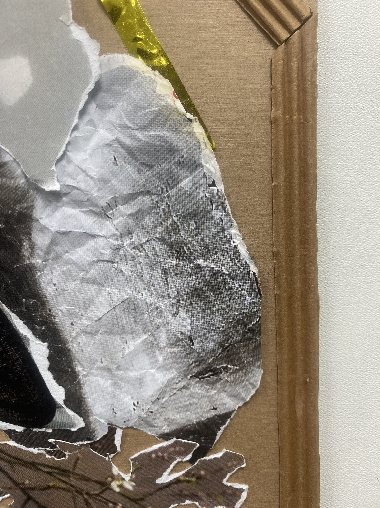
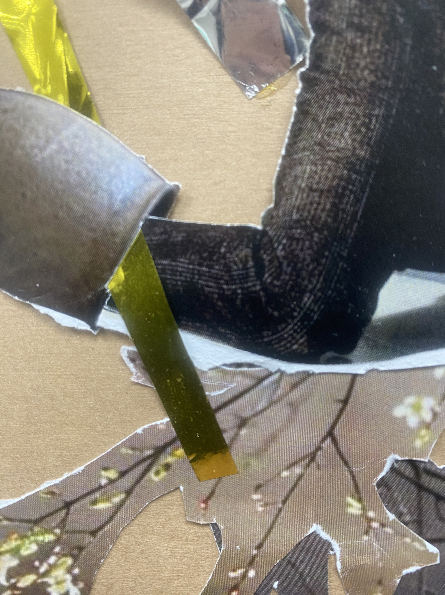
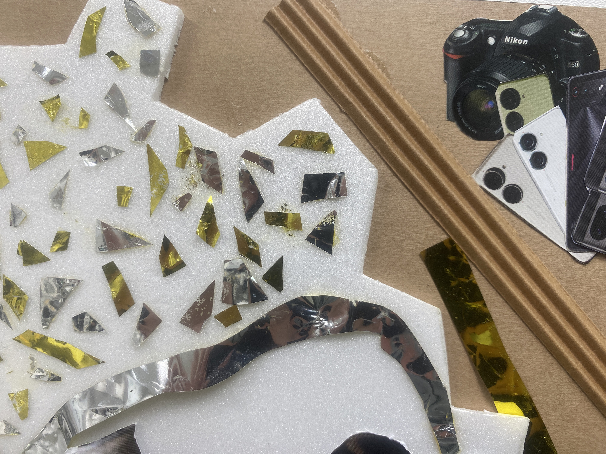
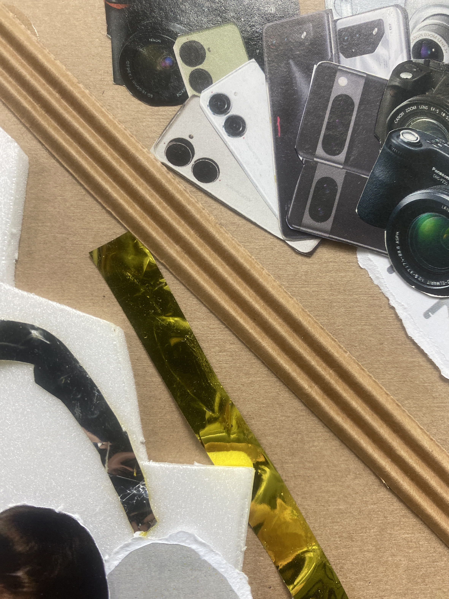
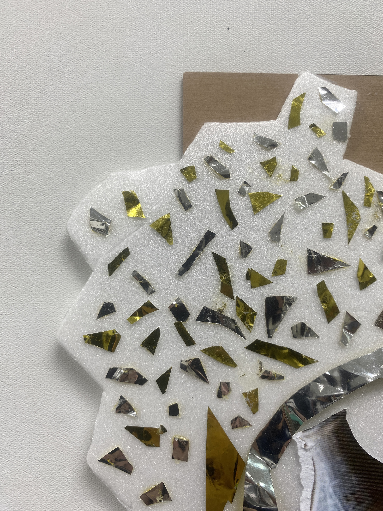
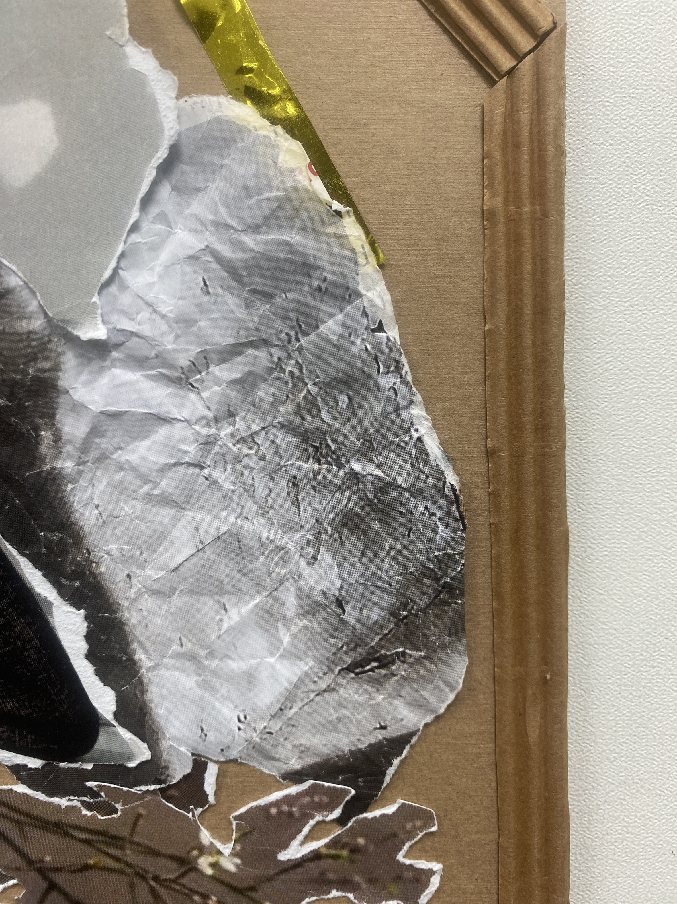
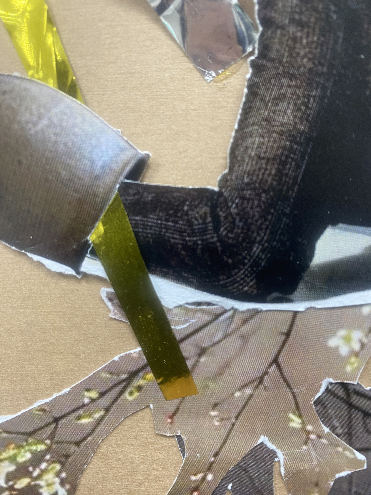

祈禱的托尼





Tony，他是有夢想的年輕人，即使外界都沒人認同，甚至嘲笑，也依舊祈禱著自己的金銀夢。
現代社會人的毛病，容易在意別人的眼光，但是 Tony 教我們要相信自己，才能擁有理想的未來。
利用複合式媒材的方式呈現，底板是牛皮紙，保麗龍和金銀色的包裝紙象徵夢想，瓦楞紙表示隔絕的防護罩。





Tony，他是有夢想的年輕人，即使外界都沒人認同，甚至嘲笑，也依舊祈禱著自己的金銀夢。
現代社會人的毛病，容易在意別人的眼光，但是 Tony 教我們要相信自己，才能擁有理想的未來。
利用複合式媒材的方式呈現，底板是牛皮紙，保麗龍和金銀色的包裝紙象徵夢想，瓦楞紙表示隔絕的防護罩。